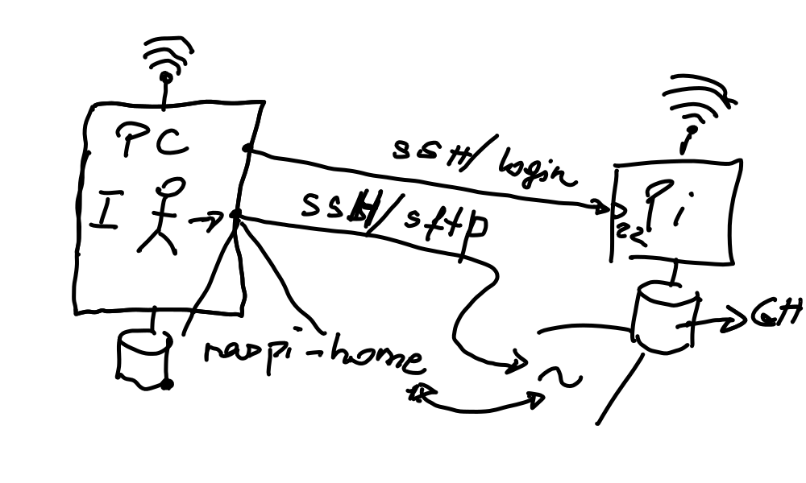

2021-11-15¶
Project Management¶
Documentation: repeat “how to build”
Announce ece19 internal project management
Open mgmt sheet from Moodle ⟶ adjacence matrix
Show graph
Walk through tasks and persons
Management time. Ask a number of questions that will be answered/discussed tomorrow:
Simulated/Dummy Thermometers assignment changes?
Any others? Should we update anything?
Integration questions. Communicate, guys!
Work Environment¶
-
Why? ⟶ Many problems on native Doze
MinGW/Git Bash:
python -m venvsets up a Doze venvWhat else?
Git document by someone?
- 
Systems Programming: Files, Directories, Links …¶
Linux Systems Programming, and Python. Files, file descriptors, File IO.
C: System Calls (53, 54, 55, 56)
C: Error Handling (58, 59)
C: File IO, Basics (64ff)
Directories and Links (151, 152)
Directory (153)
readdir()(man page)Python:
os.listdir()(documentation),ow.walk()(documentation)
Soft Link (155)
readlink()(man page)Python:
os.readlink()(documentation)